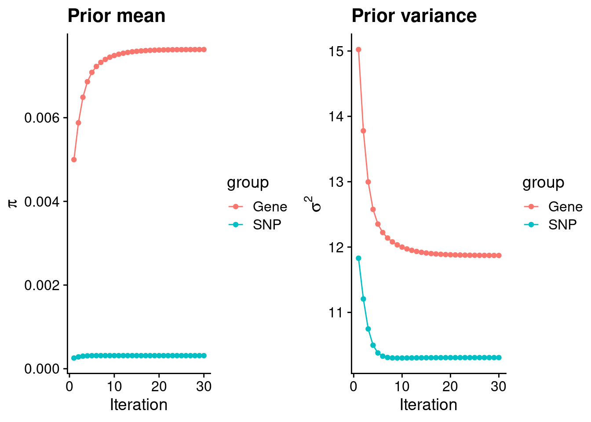
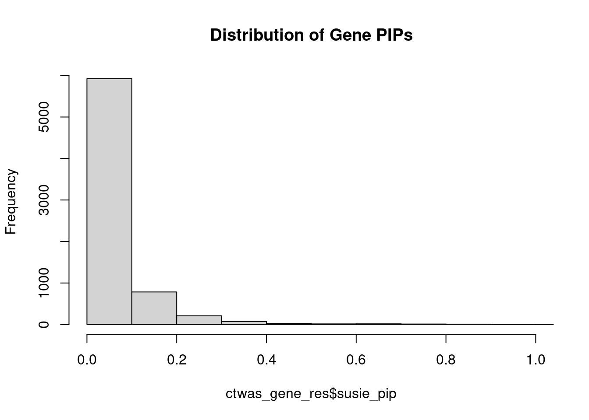
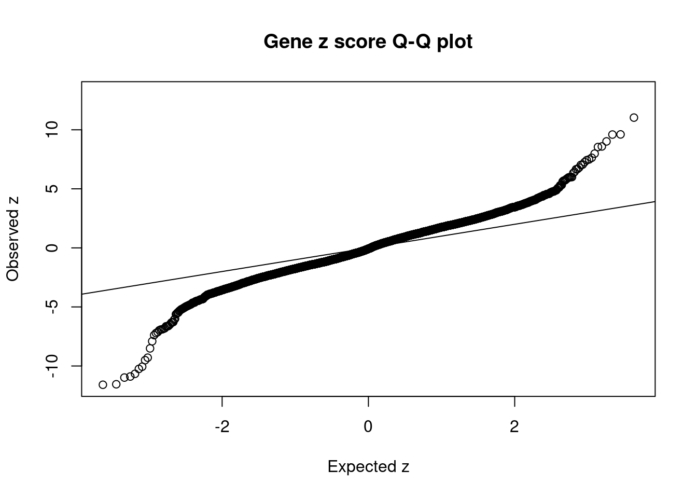
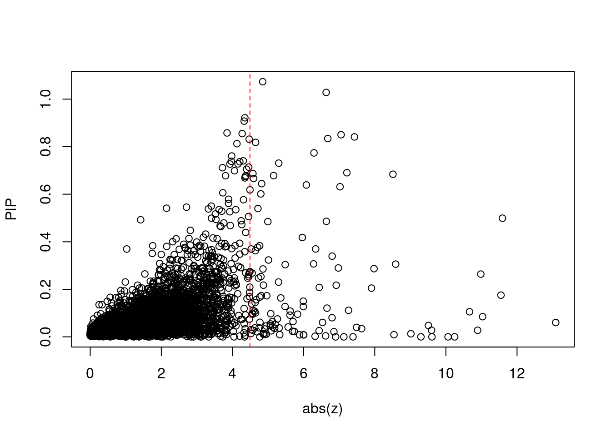
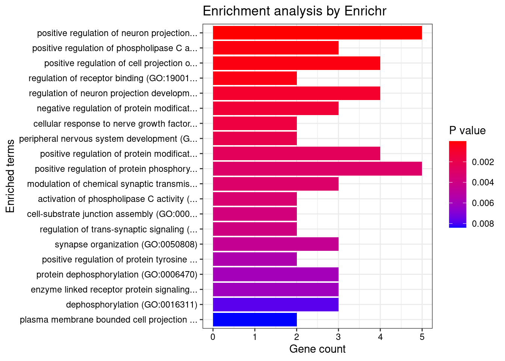
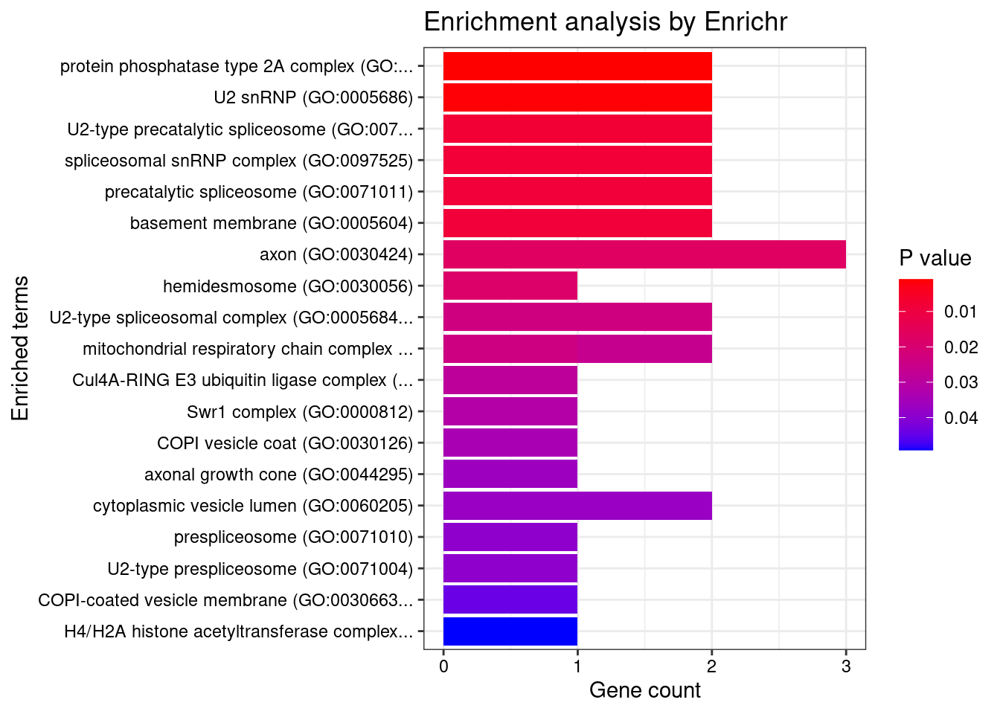
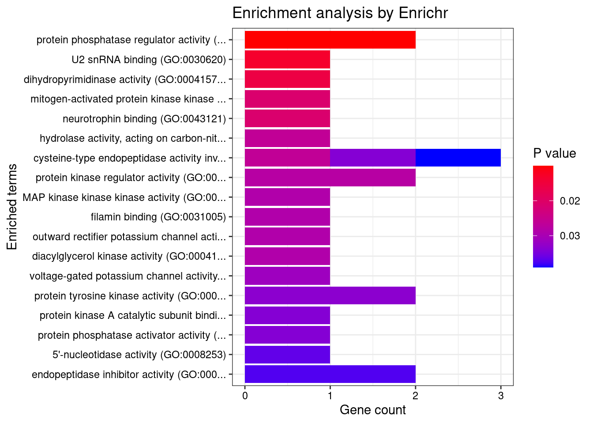
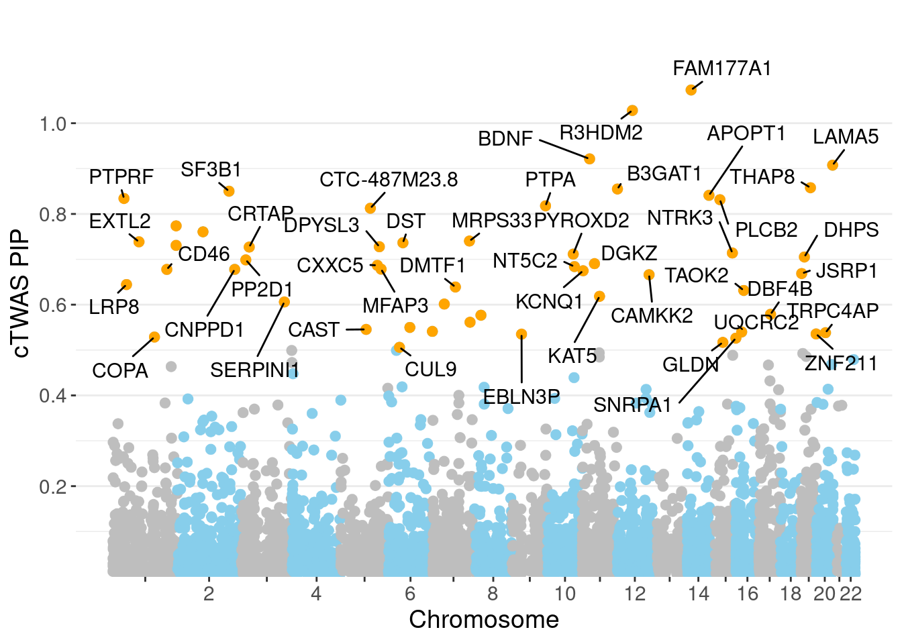

Last updated: 2022-05-18
Checks: 5 2
Knit directory: cTWAS_analysis/
This reproducible R Markdown analysis was created with workflowr (version 1.6.2). The Checks tab describes the reproducibility checks that were applied when the results were created. The Past versions tab lists the development history.
The R Markdown file has unstaged changes. To know which version of the R Markdown file created these results, you’ll want to first commit it to the Git repo. If you’re still working on the analysis, you can ignore this warning. When you’re finished, you can run wflow_publish to commit the R Markdown file and build the HTML.
Great job! The global environment was empty. Objects defined in the global environment can affect the analysis in your R Markdown file in unknown ways. For reproduciblity it’s best to always run the code in an empty environment.
The command set.seed(20211220) was run prior to running the code in the R Markdown file. Setting a seed ensures that any results that rely on randomness, e.g. subsampling or permutations, are reproducible.
Great job! Recording the operating system, R version, and package versions is critical for reproducibility.
Nice! There were no cached chunks for this analysis, so you can be confident that you successfully produced the results during this run.
Using absolute paths to the files within your workflowr project makes it difficult for you and others to run your code on a different machine. Change the absolute path(s) below to the suggested relative path(s) to make your code more reproducible.
| absolute | relative |
|---|---|
| /project2/xinhe/shengqian/cTWAS/cTWAS_analysis/data/ | data |
| /project2/xinhe/shengqian/cTWAS/cTWAS_analysis/code/ctwas_config.R | code/ctwas_config.R |
Great! You are using Git for version control. Tracking code development and connecting the code version to the results is critical for reproducibility.
The results in this page were generated with repository version 2749be9. See the Past versions tab to see a history of the changes made to the R Markdown and HTML files.
Note that you need to be careful to ensure that all relevant files for the analysis have been committed to Git prior to generating the results (you can use wflow_publish or wflow_git_commit). workflowr only checks the R Markdown file, but you know if there are other scripts or data files that it depends on. Below is the status of the Git repository when the results were generated:
Ignored files:
Ignored: .Rhistory
Ignored: .ipynb_checkpoints/
Untracked files:
Untracked: G_list.RData
Untracked: Rplot.png
Untracked: SCZ_annotation.xlsx
Untracked: analysis/.ipynb_checkpoints/
Untracked: analysis/SCZ_E_S_Analysis.Rmd
Untracked: analysis/Untitled1.ipynb
Untracked: code/.ipynb_checkpoints/
Untracked: code/AF_out/
Untracked: code/Autism_out/
Untracked: code/BMI_S_out/
Untracked: code/BMI_out/
Untracked: code/Glucose_out/
Untracked: code/LDL_S_out/
Untracked: code/SCZ_2014_EUR_out/
Untracked: code/SCZ_2018_S_out/
Untracked: code/SCZ_2018_out/
Untracked: code/SCZ_2020_Single_out/
Untracked: code/SCZ_2020_out/
Untracked: code/SCZ_S_out/
Untracked: code/SCZ_out/
Untracked: code/T2D_out/
Untracked: code/ctwas_config.R
Untracked: code/mapping.R
Untracked: code/out/
Untracked: code/process_scz_2018_snps.R
Untracked: code/run_AF_analysis.sbatch
Untracked: code/run_AF_analysis.sh
Untracked: code/run_AF_ctwas_rss_LDR.R
Untracked: code/run_Autism_analysis.sbatch
Untracked: code/run_Autism_analysis.sh
Untracked: code/run_Autism_ctwas_rss_LDR.R
Untracked: code/run_BMI_analysis.sbatch
Untracked: code/run_BMI_analysis.sh
Untracked: code/run_BMI_analysis_S.sbatch
Untracked: code/run_BMI_analysis_S.sh
Untracked: code/run_BMI_ctwas_rss_LDR.R
Untracked: code/run_BMI_ctwas_rss_LDR_S.R
Untracked: code/run_Glucose_analysis.sbatch
Untracked: code/run_Glucose_analysis.sh
Untracked: code/run_Glucose_ctwas_rss_LDR.R
Untracked: code/run_LDL_analysis_S.sbatch
Untracked: code/run_LDL_analysis_S.sh
Untracked: code/run_LDL_ctwas_rss_LDR_S.R
Untracked: code/run_SCZ_2014_EUR_analysis.sbatch
Untracked: code/run_SCZ_2014_EUR_analysis.sh
Untracked: code/run_SCZ_2014_EUR_ctwas_rss_LDR.R
Untracked: code/run_SCZ_2018_analysis.sbatch
Untracked: code/run_SCZ_2018_analysis.sh
Untracked: code/run_SCZ_2018_analysis_S.sbatch
Untracked: code/run_SCZ_2018_analysis_S.sh
Untracked: code/run_SCZ_2018_ctwas_rss_LDR.R
Untracked: code/run_SCZ_2018_ctwas_rss_LDR_S.R
Untracked: code/run_SCZ_2020_Single_analysis.sbatch
Untracked: code/run_SCZ_2020_Single_analysis.sh
Untracked: code/run_SCZ_2020_Single_ctwas_rss_LDR.R
Untracked: code/run_SCZ_2020_analysis.sbatch
Untracked: code/run_SCZ_2020_analysis.sh
Untracked: code/run_SCZ_2020_ctwas_rss_LDR.R
Untracked: code/run_SCZ_analysis.sbatch
Untracked: code/run_SCZ_analysis.sh
Untracked: code/run_SCZ_analysis_S.sbatch
Untracked: code/run_SCZ_analysis_S.sh
Untracked: code/run_SCZ_ctwas_rss_LDR.R
Untracked: code/run_SCZ_ctwas_rss_LDR_S.R
Untracked: code/run_T2D_analysis.sbatch
Untracked: code/run_T2D_analysis.sh
Untracked: code/run_T2D_ctwas_rss_LDR.R
Untracked: code/wflow_build.R
Untracked: code/wflow_build.sbatch
Untracked: data/.ipynb_checkpoints/
Untracked: data/GO_Terms/
Untracked: data/PGC3_SCZ_wave3_public.v2.tsv
Untracked: data/SCZ/
Untracked: data/SCZ_2014_EUR/
Untracked: data/SCZ_2018/
Untracked: data/SCZ_2018_S/
Untracked: data/SCZ_2020/
Untracked: data/SCZ_S/
Untracked: data/Supplementary Table 15 - MAGMA.xlsx
Untracked: data/Supplementary Table 20 - Prioritised Genes.xlsx
Untracked: data/T2D/
Untracked: data/UKBB/
Untracked: data/UKBB_SNPs_Info.text
Untracked: data/gene_OMIM.txt
Untracked: data/gene_pip_0.8.txt
Untracked: data/mashr_Heart_Atrial_Appendage.db
Untracked: data/mashr_sqtl/
Untracked: data/scz_2018.RDS
Untracked: data/summary_known_genes_annotations.xlsx
Untracked: data/untitled.txt
Untracked: top_genes_32.txt
Untracked: top_genes_37.txt
Untracked: top_genes_43.txt
Untracked: top_genes_81.txt
Untracked: z_snp_pos_SCZ.RData
Untracked: z_snp_pos_SCZ_2014_EUR.RData
Untracked: z_snp_pos_SCZ_2018.RData
Untracked: z_snp_pos_SCZ_2020.RData
Unstaged changes:
Deleted: analysis/BMI_S_results.Rmd
Modified: analysis/SCZ_2018_Brain_Amygdala_S.Rmd
Modified: analysis/SCZ_2018_Brain_Anterior_cingulate_cortex_BA24_S.Rmd
Modified: analysis/SCZ_2018_Brain_Caudate_basal_ganglia_S.Rmd
Modified: analysis/SCZ_2018_Brain_Cerebellar_Hemisphere_S.Rmd
Modified: analysis/SCZ_2018_Brain_Cerebellum_S.Rmd
Modified: analysis/SCZ_2018_Brain_Cortex_S.Rmd
Modified: analysis/SCZ_2018_Brain_Frontal_Cortex_BA9_S.Rmd
Modified: analysis/SCZ_2018_Brain_Hippocampus_S.Rmd
Modified: analysis/SCZ_2018_Brain_Hypothalamus_S.Rmd
Modified: analysis/SCZ_2018_Brain_Nucleus_accumbens_basal_ganglia_S.Rmd
Modified: analysis/SCZ_2018_Brain_Putamen_basal_ganglia_S.Rmd
Modified: analysis/SCZ_2018_Brain_Spinal_cord_cervical_c-1_S.Rmd
Modified: analysis/SCZ_2018_Brain_Substantia_nigra_S.Rmd
Modified: analysis/SCZ_Annotation_Analysis.Rmd
Note that any generated files, e.g. HTML, png, CSS, etc., are not included in this status report because it is ok for generated content to have uncommitted changes.
These are the previous versions of the repository in which changes were made to the R Markdown (analysis/SCZ_2018_Brain_Spinal_cord_cervical_c-1_S.Rmd) and HTML (docs/SCZ_2018_Brain_Spinal_cord_cervical_c-1_S.html) files. If you’ve configured a remote Git repository (see ?wflow_git_remote), click on the hyperlinks in the table below to view the files as they were in that past version.
| File | Version | Author | Date | Message |
|---|---|---|---|---|
| Rmd | 2749be9 | sq-96 | 2022-05-12 | update |
| html | 2749be9 | sq-96 | 2022-05-12 | update |
| html | 011327d | sq-96 | 2022-05-12 | update |
| Rmd | 6c6abbd | sq-96 | 2022-05-12 | update |
library(reticulate)
use_python("/scratch/midway2/shengqian/miniconda3/envs/PythonForR/bin/python",required=T)#number of imputed weights
nrow(qclist_all)[1] 18945#number of imputed weights by chromosome
table(qclist_all$chr)
1 2 3 4 5 6 7 8 9 10 11 12 13 14 15 16
1715 1338 1100 796 767 1008 1092 641 786 887 1173 1022 398 671 695 738
17 18 19 20 21 22
1343 294 1317 607 40 517 #number of imputed weights without missing variants
sum(qclist_all$nmiss==0)[1] 16803#proportion of imputed weights without missing variants
mean(qclist_all$nmiss==0)[1] 0.8869finish
Attaching package: 'dplyr'The following objects are masked from 'package:stats':
filter, lagThe following objects are masked from 'package:base':
intersect, setdiff, setequal, union
| Version | Author | Date |
|---|---|---|
| 2749be9 | sq-96 | 2022-05-12 |
gene snp
0.0076295 0.0003131 gene snp
11.87 10.31 [1] 105318[1] 7200 6309950 gene snp
0.006192 0.193399 [1] 0.01727 1.11082
| Version | Author | Date |
|---|---|---|
| 2749be9 | sq-96 | 2022-05-12 |
genename region_tag susie_pip mu2 PVE z num_intron num_sqtl
2157 FAM177A1 14_9 1.0364 23.92 0.0002052 4.849 13 14
4867 R3HDM2 12_36 1.0282 43.35 0.0004166 -6.634 4 4
3129 LAMA5 20_36 0.9075 24.09 0.0001723 -4.329 11 14
6151 THAP8 19_25 0.8578 19.74 0.0001376 3.847 2 2
601 B3GAT1 11_84 0.8550 21.97 0.0001383 4.272 7 10
5405 SF3B1 2_117 0.8501 45.64 0.0003002 7.053 4 4
1349 COA8 14_54 0.8410 45.01 0.0002955 7.429 6 9
4824 PTPRF 1_27 0.8342 37.73 0.0002420 6.680 4 4
4493 PLCB2 15_14 0.8314 24.84 0.0001344 -4.470 6 7
5018 REEP5 5_67 0.8268 21.51 0.0001368 -4.125 3 3
4810 PTPA 9_66 0.8179 23.79 0.0001480 -4.650 5 5
245 AKT3 1_128 0.7681 35.42 0.0001868 -6.291 5 5
114 ACTR1B 2_57 0.7606 20.11 0.0001094 -3.978 4 4
3719 MRPS33 7_87 0.7403 24.49 0.0001196 4.304 5 7
2110 EXTL2 1_62 0.7386 22.86 0.0001145 -3.966 3 5
1825 DST 6_42 0.7365 29.73 0.0001294 4.205 8 9
5319 SDCCAG8 1_128 0.7363 26.43 0.0001301 5.301 9 12
1815 DPYSL3 5_86 0.7277 22.63 0.0001138 -4.157 1 1
1471 CRTAP 3_24 0.7270 22.03 0.0001106 3.929 1 1
4112 NTRK3 15_41 0.7139 22.55 0.0001091 4.457 1 1 genename region_tag susie_pip mu2 PVE z num_intron num_sqtl
399 APOM 6_26 0.4991 639.82 0.0015126 -11.590 2 2
4867 R3HDM2 12_36 1.0282 43.35 0.0004166 -6.634 4 4
5405 SF3B1 2_117 0.8501 45.64 0.0003002 7.053 4 4
1349 COA8 14_54 0.8410 45.01 0.0002955 7.429 6 9
4824 PTPRF 1_27 0.8342 37.73 0.0002420 6.680 4 4
1683 DGKZ 11_28 0.6904 47.56 0.0002134 -7.216 3 3
2157 FAM177A1 14_9 1.0364 23.92 0.0002052 4.849 13 14
4100 NT5C2 10_66 0.6814 47.62 0.0001944 -8.511 9 13
6701 VARS1 6_26 0.1755 640.87 0.0001874 -11.548 1 1
245 AKT3 1_128 0.7681 35.42 0.0001868 -6.291 5 5
6024 TAOK2 16_24 0.6314 47.43 0.0001738 7.024 3 3
3129 LAMA5 20_36 0.9075 24.09 0.0001723 -4.329 11 14
4810 PTPA 9_66 0.8179 23.79 0.0001480 -4.650 5 5
601 B3GAT1 11_84 0.8550 21.97 0.0001383 4.272 7 10
6151 THAP8 19_25 0.8578 19.74 0.0001376 3.847 2 2
5018 REEP5 5_67 0.8268 21.51 0.0001368 -4.125 3 3
4493 PLCB2 15_14 0.8314 24.84 0.0001344 -4.470 6 7
5319 SDCCAG8 1_128 0.7363 26.43 0.0001301 5.301 9 12
1825 DST 6_42 0.7365 29.73 0.0001294 4.205 8 9
3544 MFAP3 5_90 0.6783 28.78 0.0001257 -5.157 2 2
| Version | Author | Date |
|---|---|---|
| 2749be9 | sq-96 | 2022-05-12 |

| Version | Author | Date |
|---|---|---|
| 2749be9 | sq-96 | 2022-05-12 |
[1] 0.01722 genename region_tag susie_pip mu2 PVE z num_intron num_sqtl
4384 PGBD1 6_22 6.031e-02 161.09 3.090e-06 13.087 3 3
399 APOM 6_26 4.991e-01 639.82 1.513e-03 -11.590 2 2
6701 VARS1 6_26 1.755e-01 640.87 1.874e-04 -11.548 1 1
832 C6orf136 6_24 8.488e-02 80.36 5.498e-06 11.031 2 2
2295 FLOT1 6_24 2.639e-01 80.69 5.241e-05 -10.981 8 8
3353 LST1 6_25 2.759e-02 94.96 5.477e-07 -10.892 3 3
738 BTN3A2 6_20 1.055e-01 92.12 4.453e-06 -10.665 5 5
612 BAG6 6_26 1.878e-09 511.85 1.714e-20 -10.247 7 7
4681 PPT2 6_26 4.883e-12 476.52 1.079e-25 -10.061 4 4
2546 GPSM3 6_26 1.208e-12 426.07 5.903e-27 9.608 1 2
6417 TRIM38 6_20 2.769e-02 74.35 3.015e-07 9.596 2 2
1016 CCHCR1 6_25 4.787e-02 67.97 6.243e-07 -9.508 8 12
1916 EGFL8 6_26 1.443e-15 362.39 7.168e-33 -9.298 3 4
1622 DDR1 6_25 1.294e-02 70.64 1.123e-07 9.016 1 1
2711 HLA-DMA 6_27 3.059e-01 76.01 3.919e-05 8.588 7 8
7191 ZSCAN23 6_22 9.038e-03 46.89 3.637e-08 8.541 1 1
4100 NT5C2 10_66 6.814e-01 47.62 1.944e-04 -8.511 9 13
3400 MAIP1 2_118 2.868e-01 45.08 3.521e-05 7.980 1 1
497 AS3MT 10_66 2.050e-01 42.75 1.691e-05 -7.907 2 2
7192 ZSCAN26 6_22 3.448e-02 38.07 3.077e-07 7.631 4 4#number of genes for gene set enrichment
length(genes)[1] 54Uploading data to Enrichr... Done.
Querying GO_Biological_Process_2021... Done.
Querying GO_Cellular_Component_2021... Done.
Querying GO_Molecular_Function_2021... Done.
Parsing results... Done.
[1] "GO_Biological_Process_2021"
| Version | Author | Date |
|---|---|---|
| 2749be9 | sq-96 | 2022-05-12 |
Term Overlap
1 positive regulation of neuron projection development (GO:0010976) 4/88
Adjusted.P.value Genes
1 0.04397 NTRK3;DPYSL3;SERPINI1;LRP8
[1] "GO_Cellular_Component_2021"
| Version | Author | Date |
|---|---|---|
| 2749be9 | sq-96 | 2022-05-12 |
[1] Term Overlap Adjusted.P.value Genes
<0 rows> (or 0-length row.names)
[1] "GO_Molecular_Function_2021"
| Version | Author | Date |
|---|---|---|
| 2749be9 | sq-96 | 2022-05-12 |
[1] Term Overlap Adjusted.P.value Genes
<0 rows> (or 0-length row.names) Description FDR Ratio
30 Measles 0.02674 1/29
49 Electroencephalogram abnormal 0.02674 1/29
55 Congenital absent nipple 0.02674 1/29
84 Congenital absence of breast with absent nipple 0.02674 1/29
123 Osteogenesis Imperfecta Type VII 0.02674 1/29
124 Familial encephalopathy with neuroserpin inclusion bodies 0.02674 1/29
130 HEMOLYTIC UREMIC SYNDROME, ATYPICAL, SUSCEPTIBILITY TO, 2 0.02674 1/29
133 SENIOR-LOKEN SYNDROME 7 0.02674 1/29
137 NEUROPATHY, HEREDITARY SENSORY AND AUTONOMIC, TYPE VI 0.02674 1/29
138 MITOCHONDRIAL COMPLEX III DEFICIENCY, NUCLEAR TYPE 5 0.02674 1/29
BgRatio
30 1/9703
49 1/9703
55 1/9703
84 1/9703
123 1/9703
124 1/9703
130 1/9703
133 1/9703
137 1/9703
138 1/9703Warning: replacing previous import 'lifecycle::last_warnings' by
'rlang::last_warnings' when loading 'hms'Loading the functional categories...
Loading the ID list...
Loading the reference list...
Performing the enrichment analysis...Warning in oraEnrichment(interestGeneList, referenceGeneList, geneSet, minNum =
minNum, : No significant gene set is identified based on FDR 0.05!NULLWarning: ggrepel: 9 unlabeled data points (too many overlaps). Consider
increasing max.overlaps
| Version | Author | Date |
|---|---|---|
| 2749be9 | sq-96 | 2022-05-12 |
#number of genes in known annotations
print(length(known_annotations))[1] 130#number of genes in known annotations with imputed expression
print(sum(known_annotations %in% ctwas_gene_res$genename))[1] 46#significance threshold for TWAS
print(sig_thresh)[1] 4.495#number of ctwas genes
length(ctwas_genes)[1] 11#number of TWAS genes
length(twas_genes)[1] 124#show novel genes (ctwas genes with not in TWAS genes)
ctwas_gene_res[ctwas_gene_res$genename %in% novel_genes,report_cols] genename region_tag susie_pip mu2 PVE z num_intron num_sqtl
601 B3GAT1 11_84 0.8550 21.97 0.0001383 4.272 7 10
3129 LAMA5 20_36 0.9075 24.09 0.0001723 -4.329 11 14
4493 PLCB2 15_14 0.8314 24.84 0.0001344 -4.470 6 7
5018 REEP5 5_67 0.8268 21.51 0.0001368 -4.125 3 3
6151 THAP8 19_25 0.8578 19.74 0.0001376 3.847 2 2#sensitivity / recall
print(sensitivity) ctwas TWAS
0.02308 0.11538 #specificity
print(specificity) ctwas TWAS
0.9989 0.9848 #precision / PPV
print(precision) ctwas TWAS
0.2727 0.1210
sessionInfo()R version 4.1.0 (2021-05-18)
Platform: x86_64-pc-linux-gnu (64-bit)
Running under: Scientific Linux 7.4 (Nitrogen)
Matrix products: default
BLAS/LAPACK: /software/openblas-0.3.13-el7-x86_64/lib/libopenblas_haswellp-r0.3.13.so
locale:
[1] LC_CTYPE=en_US.UTF-8 LC_NUMERIC=C
[3] LC_TIME=en_US.UTF-8 LC_COLLATE=en_US.UTF-8
[5] LC_MONETARY=en_US.UTF-8 LC_MESSAGES=en_US.UTF-8
[7] LC_PAPER=en_US.UTF-8 LC_NAME=C
[9] LC_ADDRESS=C LC_TELEPHONE=C
[11] LC_MEASUREMENT=en_US.UTF-8 LC_IDENTIFICATION=C
attached base packages:
[1] stats graphics grDevices utils datasets methods base
other attached packages:
[1] readxl_1.4.0 forcats_0.5.1 stringr_1.4.0 purrr_0.3.4
[5] readr_1.4.0 tidyr_1.1.3 tidyverse_1.3.1 tibble_3.1.7
[9] WebGestaltR_0.4.4 disgenet2r_0.99.2 enrichR_3.0 cowplot_1.1.1
[13] ggplot2_3.3.5 dplyr_1.0.7 reticulate_1.20 workflowr_1.6.2
loaded via a namespace (and not attached):
[1] fs_1.5.0 lubridate_1.7.10 doParallel_1.0.16 httr_1.4.2
[5] rprojroot_2.0.2 tools_4.1.0 backports_1.2.1 doRNG_1.8.2
[9] bslib_0.2.5.1 utf8_1.2.1 R6_2.5.0 vipor_0.4.5
[13] DBI_1.1.1 colorspace_2.0-2 withr_2.4.2 ggrastr_1.0.1
[17] tidyselect_1.1.1 curl_4.3.2 compiler_4.1.0 git2r_0.28.0
[21] rvest_1.0.0 cli_3.0.0 Cairo_1.5-15 xml2_1.3.2
[25] labeling_0.4.2 sass_0.4.0 scales_1.1.1 systemfonts_1.0.4
[29] apcluster_1.4.9 digest_0.6.27 rmarkdown_2.9 svglite_2.0.0
[33] pkgconfig_2.0.3 htmltools_0.5.1.1 dbplyr_2.1.1 highr_0.9
[37] rlang_1.0.2 rstudioapi_0.13 jquerylib_0.1.4 farver_2.1.0
[41] generics_0.1.0 jsonlite_1.7.2 magrittr_2.0.1 Matrix_1.3-3
[45] ggbeeswarm_0.6.0 Rcpp_1.0.7 munsell_0.5.0 fansi_0.5.0
[49] lifecycle_1.0.0 stringi_1.6.2 whisker_0.4 yaml_2.2.1
[53] plyr_1.8.6 grid_4.1.0 ggrepel_0.9.1 parallel_4.1.0
[57] promises_1.2.0.1 crayon_1.4.1 lattice_0.20-44 haven_2.4.1
[61] hms_1.1.0 knitr_1.33 pillar_1.7.0 igraph_1.2.6
[65] rjson_0.2.20 rngtools_1.5 reshape2_1.4.4 codetools_0.2-18
[69] reprex_2.0.0 glue_1.4.2 evaluate_0.14 data.table_1.14.0
[73] modelr_0.1.8 png_0.1-7 vctrs_0.3.8 httpuv_1.6.1
[77] foreach_1.5.1 cellranger_1.1.0 gtable_0.3.0 assertthat_0.2.1
[81] xfun_0.24 broom_0.7.8 later_1.2.0 iterators_1.0.13
[85] beeswarm_0.4.0 ellipsis_0.3.2